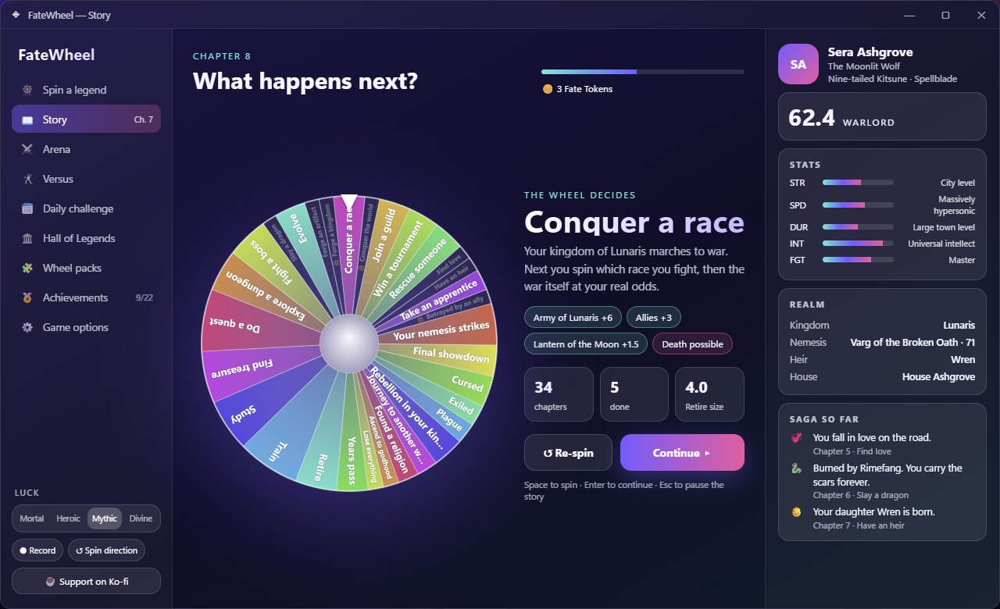
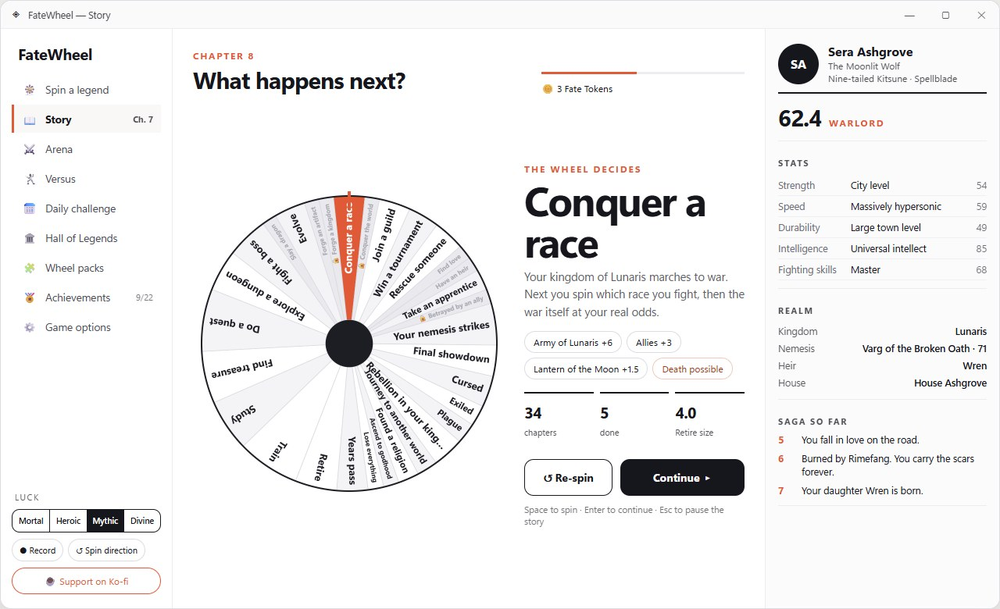
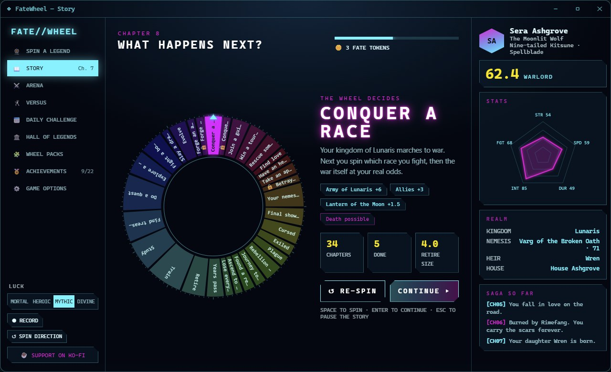
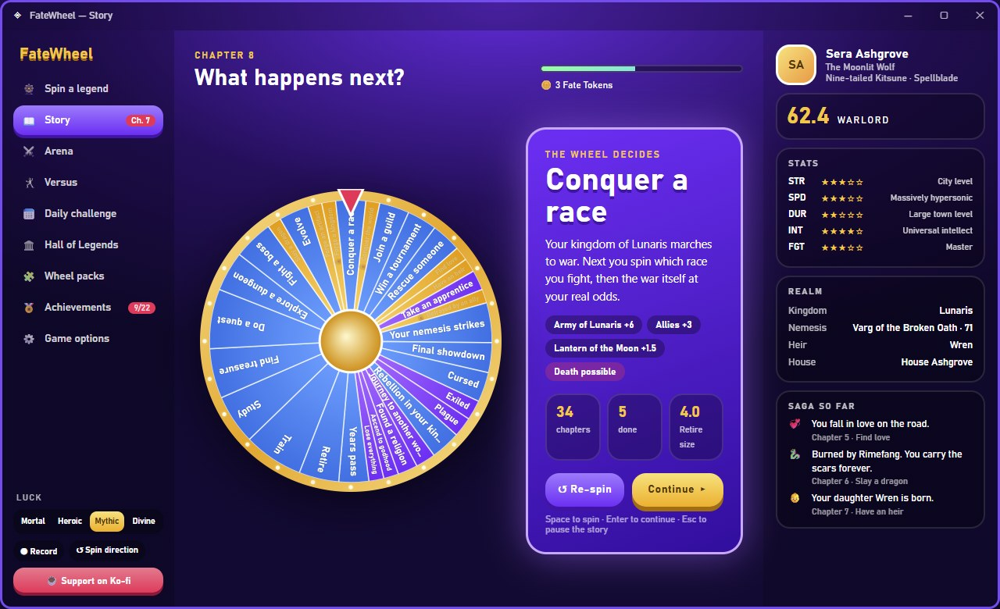

Desktop client mockups
The four modern directions laid out for the desktop app (1280×780 window). Each page shows the Story screen (navigation, wheel, character and saga side by side) and the Character screen. Phone layouts are in mockups/modern.

1 · GlassThe Glass direction as a desktop app: a frosted sidebar, the wheel lit like an object in the middle, and the character always visible on the right. Results float in glass cards.

2 · MinimalThe Minimal direction as a desktop app: white space, one orange accent and big type. Every number is shown, so you can always see why a result happened.

3 · HUDThe HUD direction as a desktop app: a command console. A glowing ring wheel, live readouts, angled panels, a stat radar and the saga as a mission log.

4 · GachaThe Gacha direction as a desktop app: bold, colourful and rewarding. Rarity colours on every wheel, chunky 3D buttons, a big reveal and the character as a collectible card.
Open these pages through a local server (for example python -m http.server in the project folder) so they can load the game data. Regenerate them with node mockups/desktop/_gen.js.